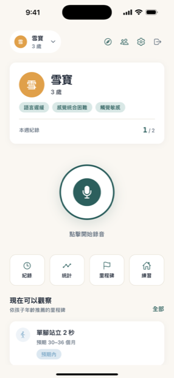
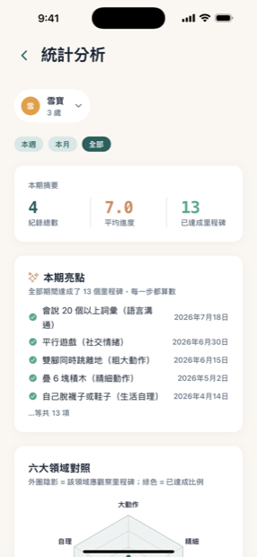
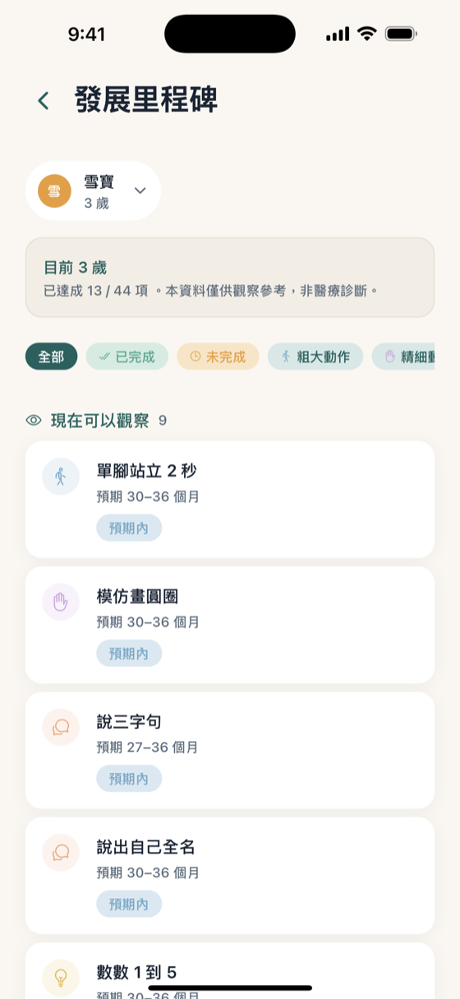
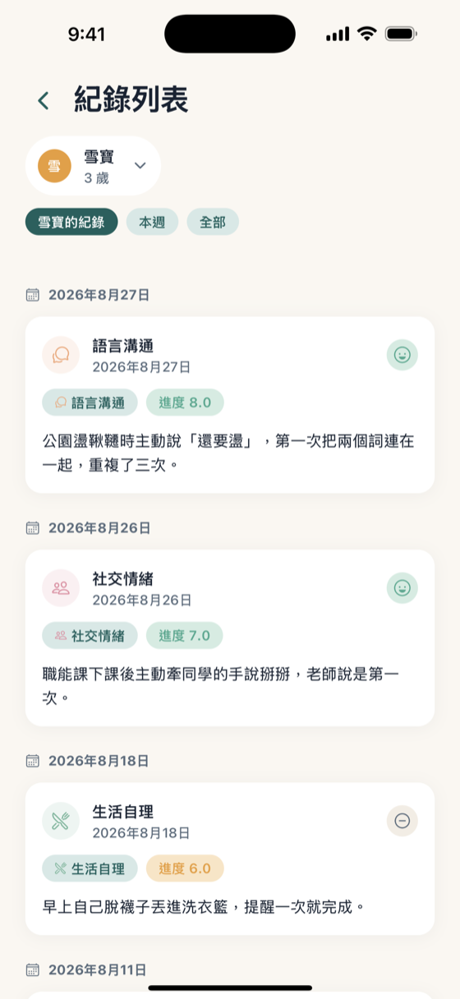
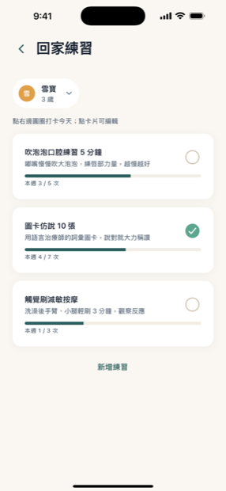

用說的就能記錄
孩子在賣場說出新的詞、第一次自己穿上鞋，當下對手機說一段話。AI 自動轉成文字、分類到六大發展領域、標記情緒與進步。
為早療家庭設計的成長紀錄
對著手機說一段話，AI 幫你整理成可以帶去回診的成長紀錄。
在 App Store 下載前 14 天完整 Pro · 之後繼續免費用 · 不需信用卡
怎麼用
趕療育課、追回診、深夜才有自己的時間。所以我們把「記錄」這件事，縮到一段話的長度。
「今天在賣場自己說出『還要』，第一次把兩個字連在一起。」想到就說，不用打字、不用分類。
自動轉成文字，歸到六大發展領域，標出情緒、進步與可以問治療師的問題。
回診前一鍵匯出摘要；另一半與長輩用邀請碼就能一起看、一起記。
功能
從「懷疑孩子慢了」到「每週固定療育」，每個階段需要的東西都放在同一個 App 裡。
孩子在賣場說出新的詞、第一次自己穿上鞋，當下對手機說一段話。AI 自動轉成文字、分類到六大發展領域、標記情緒與進步。
內建 0 到 6 歲六大領域的發展里程碑，依孩子年齡推薦現在可以觀察的項目。早產寶寶自動以矯正年齡計算。
「最近有什麼變化？」門診裡最難的問題。一鍵產生結構化摘要：新達成的里程碑、追蹤中的項目、六大領域達成率、日常觀察重點。
治療師交代的回家作業有地方放了。記下練習內容與每週目標，每天打卡，下次上課直接回報進度。
產生邀請碼，讓另一半、長輩一起看到並記錄孩子的成長。早療是全家的事，不該只落在一個人身上。
聯合評估怎麼掛號、遲緩證明怎麼申請、療育補助去哪領。從懷疑到資源到位，照著步驟走就不迷路。
畫面
沒有跳出的提示、沒有廣告。打開就是孩子，和一顆錄音鈕。





左右滑動查看更多畫面
方案
免費版讓你確認「用說的來記」適不適合你們家。一週兩三堂課、治療師每次都交代一串作業之後，Pro 才跟得上你想記的量。
隱私
這是一個放孩子發展紀錄的地方。我們把它當成醫療級的敏感資料來對待。
App 內沒有任何廣告，也不做跨 App 追蹤。
你和孩子的資料不會賣給任何第三方，也不用於廣告。
音檔只在轉文字的那幾秒暫存於伺服器，轉完立即刪除。
一鍵匯出全部紀錄；也能永久刪除帳號與所有資料。
完整說明見 隱私權政策。
常見問題
對。你只要像跟另一半講今天發生的事那樣說一段話，App 會轉成文字、分類、抓出重點。你之後可以編輯逐字稿，但多數人不需要。
音檔會傳送到 OpenAI 的語音轉文字服務轉成文字，轉完就從我們的伺服器刪除；依 OpenAI API 的政策，這些資料不會用來訓練模型。保留下來的是逐字稿與整理結果，只有你和你邀請的家人看得到。
想先體驗的話夠：每週 2 次、每次 2 分鐘，足夠你試出「用說的來記」適不適合你們家。
但孩子一旦開始固定療育，情況就不一樣了——一週兩三堂課，每堂治療師都交代一串回家作業，平常又有想留住的小進步，2 次很快就用完，2 分鐘也錄不完治療師的說明。Pro 每週 20 次、每次 5 分鐘，一個月 NT$120，換算每天不到 4 元，比漏記一次治療師交代的事便宜很多。
填入預產期後，里程碑會自動以矯正年齡對照，不會因為提早出生而被判定「落後」。
可以，App 有專門的「治療師說明」錄音類型，會抽取治療師交代的重點與回家作業。請務必先徵得治療師同意，部分機構有禁止錄音的規定。
目前先提供 iOS 版。想要 Android 版的話，寫信給我們，需求多的話會提前排進計畫。
不行。小步腳印是觀察輔助工具，不是醫療器材，分析結果不構成醫療診斷。若對孩子的發展有疑慮，請洽各縣市兒童發展聯合評估中心。